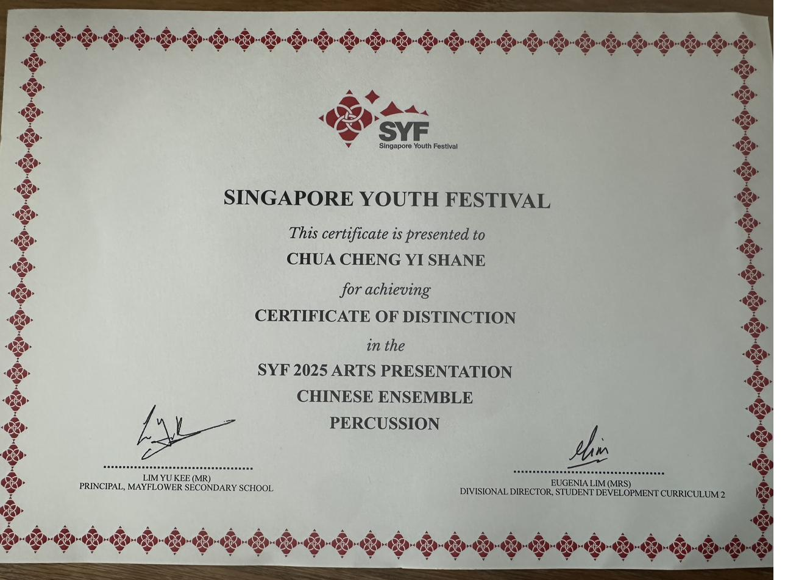
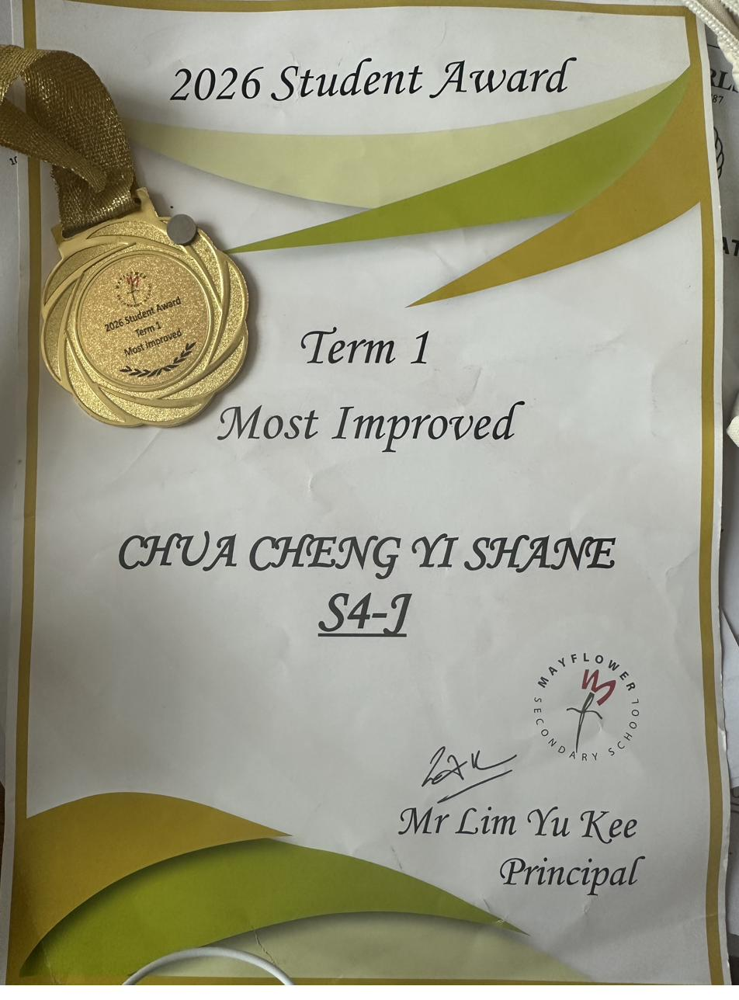

2025
SYF Certificate of Distinction
Recognised for excellence in percussion performance during the Singapore Youth Festival.
Awards & recognition
Recognition earned across music and academics — each one the result of sustained effort over time. Tap any certificate to view it full size.

2025
Recognised for excellence in percussion performance during the Singapore Youth Festival.

2026
Awarded for significant academic and personal improvement during Term 1, 2026.